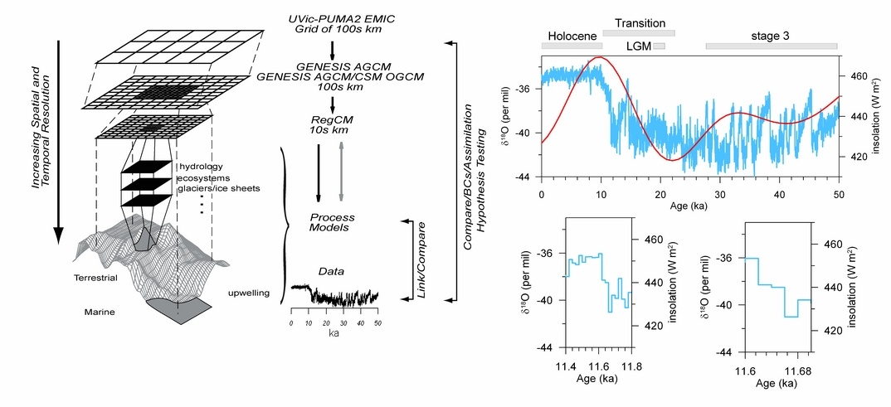

Models
We use a hierarchy of models ranging from a global Earth system Model
of Intermediate Complexity
(EMIC) via atmospheric general circulation models (AGCMs) from global to
regional scales to process models on the local scale. Long time
simulations covering e.g. the
entire transition from the Last Glacial Maximum (LGM) to the present
day will be performed with
the EMIC UVic-PUMA2.
Output from the EMIC will be used to force shorter simulations with the
global
AGCM GENESIS. Output from GENESIS will be used to force the regional
climate model
RegCM which in turn will be used to drive process models. Comparison
with paleo observations
are performed at all levels of the model hierarchy and will be used to
test hypothesis concerning the mechanisms
of past climate changes.
PALEOVAR Model Hierarchy:

last
updated Sep 22, 2006